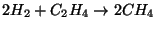
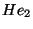

Python (version 1.5.1) programs may be embedded into the NWChem input and used to control the execution of NWChem. Python is a very powerful and widely used scripting language that provides useful things such as variables, conditional branches and loops, and is also readily extended. Example applications include scanning potential energy surfaces, computing properties in a variety of basis sets, optimizing the energy w.r.t. parameters in the basis set, computing polarizabilities with finite field, and simple molecular dynamics.
Look in the NWChem contrib directory for useful scripts and
examples. Visit the Python web-site
http://www.python.org
for a full manual and lots of useful code and resources.
A Python program is input into NWChem inside a Python compound directive.
python [print|noprint]
...
end
The END directive must be flush against the left
margin (see the Troubleshooting section for the reason why).
The program is by default printed to standard output when read, but
this may be disabled with the noprint keyword. Python uses
indentation to indicate scope (and the initial level of indentation
must be zero), whereas NWChem uses optional indentation only to make
the input more readable. For example, in Python, the contents of a
loop, or conditionally-executed block of code must be indented further
than the surrounding code. Also, Python attaches special meaning to
several symbols also used by NWChem. For these reasons, the input
inside a PYTHON compound directive is read verbatim except that
if the first line of the Python program is indented, the same amount
of indentation is removed from all subsequent lines. This is so that
a program may be indented inside the PYTHON input block for
improved readability of the NWChem input, while satisfying the
constraint that when given to Python the first line has zero
indentation.
E.g., the following two sets of input specify the same Python program.
python
print 'Hello'
print 'Goodbye'
end
python
print 'Hello'
print 'Goodbye'
end
whereas this program is in error since the indentation of the second
line is less than that of the first.
python
print 'Hello'
print 'Goodbye'
end
The Python program is not executed until the following directive is encountered
task pythonwhich is to maintain consistency with the behavior of NWChem in general. The program is executed by all nodes. This enables the full functionality and speed of NWChem to be accessible from Python, but there are some gotchas
rtdb_put()) it is the data
from node zero that is written.
Since we have little experience using Python, the NWChem-Python interface might change in a non-backwardly compatible fashion as we discover better ways of providing useful functionality. We would appreciate suggestions about useful things that can be added to the NWChem-Python interface. In principle, nearly any Fortran or C routine within NWChem can be extended to Python, but we are also interested in ideas that will enable users to build completely new things. For instance, how about being able to define your own energy functions that can be used with the existing optimizers or dynamics package?
Python has been extended with a module named "nwchem" which is
automatically imported and contains the following NWChem-specific
commands. They all handle NWChem-related errors by raising the
exception "NWChemError", which may be handled in the standard
Python manner (see Section 36.3.9).
input_parse(string) -- invokes the standard NWChem input
parser with the data in string as input. Note that the usual
behavior of NWChem will apply -- the parser only reads input up to
either end of input or until a TASK directive is encountered
(the task directive is not executed by the parser).
task_energy(theory) -- returns the energy as if computed
with the NWChem directive TASK ENERGY <THEORY>.
task_gradient(theory) -- returns a tuple
(energy,gradient) as if computed with the NWChem
directive TASK GRADIENT <THEORY>.
task_optimize(theory) -- returns a tuple
(energy,gradient) as if computed with the NWChem
directive TASK OPTIMIZE <THEORY>. The energy and gradient
will be those at the last point in the optimization and consistent
with the current geometry in the database.
ga_nodeid() -- returns the number of the parallel
process.
rtdb_print(print_values) -- prints the contents of the
RTDB. If print_values is 0, only the keys are printed, if it
is 1 then the values are also printed.
rtdb_put(name, values) or
rtdb_put(name, values, type) -- puts the values into the
database with the given name. In the first form, the type is inferred
from the first value, and in the second form the type is specified
using the last argument as one of INT, DBL,
LOGICAL, or CHAR.
rtdb_get(name) -- returns the data from the database
associated with the given name.
An example below (Section 36.3.10) explains, in lieu of a Python wrapper for the geometry object, how to obtain the Cartesian molecular coordinates directly from the database.
Several examples will provide the best explanation of how the extensions are used, and how Python might prove useful.
python
print 'Hello world from process ', ga_nodeid()
end
task python
This input prints the traditional greeting from each parallel process.
geometry units au
O 0 0 0; H 0 1.430 -1.107; H 0 -1.430 -1.107
end
python
exponent = 0.1
while (exponent <= 2.01):
input_parse('''
basis noprint
H library 3-21g; O library 3-21g; O d; %f 1.0
end
''' % (exponent))
print ' exponent = ', exponent, ' energy = ', task_energy('scf')
exponent = exponent + 0.1
end
print none
task python
This program augments a 3-21g basis for water with a d-function on oxygen and varies the exponent from 0.1 to 2.0 in steps of 0.1, printing the exponent and energy at each step.
The geometry is input as usual, but the basis set input is embedded
inside a call to input_parse() in the Python program. The
standard Python string substitution is used to put the current value of
the exponent into the basis set (replacing the %f) before being
parsed by NWChem. The energy is returned by task_energy('scf')
and printed out. The print none in the NWChem input switches
off all NWChem output so all you will see is the output from your
Python program.
Note that execution in parallel may produce unwanted output since all process execute the print statement inside the Python program.
Look in the NWChem contrib directory for a routine that makes
the above task easier.
geometry units au
O 0 0 0; H 0 1.430 -1.107; H 0 -1.430 -1.107
end
print none
python
if (ga_nodeid() == 0): plotdata = open("plotdata",'w')
def energy_at_exponent(exponent):
input_parse('''
basis noprint
H library 3-21g; O library 3-21g; O d; %f 1.0
end
''' % (exponent))
return task_energy('scf')
exponent = 0.1
while exponent <= 2.01:
energy = energy_at_exponent(exponent)
if (ga_nodeid() == 0):
print ' exponent = ', exponent, ' energy = ', energy
plotdata.write('%f %f\n' % (exponent , energy))
exponent = exponent + 0.1
if (ga_nodeid() == 0): plotdata.close()
end
task python
This input performs exactly the same calculation as the previous one,
but uses a slightly more sophisticated Python program, also writes
the data out to a file for easy visualization with a package such as
gnuplot, and protects write statements to prevent
duplicate output in a parallel job. The only significant differences
are in the Python program. A file called "plotdata" is opened,
and then a procedure is defined which given an exponent returns the
energy. Next comes the main loop that scans the exponent through the
desired range and prints the results to standard output and to the
file. When the loop is finished the additional output file is closed.
python
geometry = '''
geometry noprint; symmetry d2h
C 0 0 %f; H 0 0.916 1.224
end
'''
x = 0.6
while (x < 0.721):
input_parse(geometry % x)
energy = task_energy('scf')
print ' x = %5.2f energy = %10.6f' % (x, energy)
x = x + 0.01
end
basis; C library 6-31g*; H library 6-31g*; end
print none
task python
This scans the bond length in ethene from 1.2 to 1.44 in steps
of 0.2 computing the energy at each geometry. Since it is using
 symmetry the program actually uses a variable (
symmetry the program actually uses a variable (x) that is
half the bond length.
Look in the NWChem contrib directory for a routine that makes
the above task easier.
basis spherical
Ne library cc-pvdz; BqNe library Ne cc-pvdz
He library cc-pvdz; BqHe library He cc-pvdz
end
mp2; tight; freeze core atomic; end
print none
python noprint
supermolecule = 'geometry noprint; Ne 0 0 0; He 0 0 %f; end\n'
fragment1 = 'geometry noprint; Ne 0 0 0; BqHe 0 0 %f; end\n'
fragment2 = 'geometry noprint; BqNe 0 0 0; He 0 0 %f; end\n'
def energy(geometry):
input_parse(geometry + 'scf; vectors atomic; end\n')
return task_energy('mp2')
def bsse_energy(z):
return energy(supermolecule % z) - \
energy(fragment1 % z) - \
energy(fragment2 % z)
z = 3.3
while (z < 4.301):
e = bsse_energy(z)
if (ga_nodeid() == 0):
print ' z = %5.2f energy = %10.7f ' % (z, e)
z = z + 0.1
end
task python
This example scans the He--Ne bond-length from 3.3 to 4.3 and prints out the BSSE counterpoise corrected MP2 energy.
The basis set is specified as usual, noting that we will need functions on ghost centers to do the counterpoise correction. The Python program commences by defining strings containing the geometry of the super-molecule and two fragments, each having one variable to be substituted. Next, a function is defined to compute the energy given a geometry, and then a function is defined to compute the counterpoise corrected energy at a given bond length. Finally, the bond length is scanned and the energy printed. When computing the energy, the atomic guess has to be forced in the SCF since by default it will attempt to use orbitals from the previous calculation which is not appropriate here.
Since the counterpoise corrected energy is a linear combination of other standard energies, it is possible to compute the analytic derivatives term by term. Thus, combining this example and the next could yield the foundation of a BSSE corrected geometry optimization package.
basis noprint; H library sto-3g; O library sto-3g; end
python noprint
print ' y z energy gradient'
print ' ----- ----- ---------- ------------------------------------'
y = 1.2
while y <= 1.61:
z = 1.0
while z <= 1.21:
input_parse('''
geometry noprint units atomic
O 0 0 0
H 0 %f -%f
H 0 -%f -%f
end
''' % (y, z, y, z))
(energy,gradient) = task_gradient('scf')
print ' %5.2f %5.2f %9.6f' % (y, z, energy),
i = 0
while (i < len(gradient)):
print '%5.2f' % gradient[i],
i = i + 1
print ''
z = z + 0.1
y = y + 0.1
end
print none
task python
This program illustrates evaluating the energy and gradient
by calling task_gradient(). A water molecule is scanned
through several  geometries by varying the y and z coordinates
of the two hydrogen atoms. At each geometry the coordinates, energy
and gradient are printed.
geometries by varying the y and z coordinates
of the two hydrogen atoms. At each geometry the coordinates, energy
and gradient are printed.
The basis set (sto-3g) is input as usual. The two while loops vary
the y and z coordinates. These are then substituted into a geometry
which is parsed by NWChem using input_parse(). The energy and
gradient are then evaluated by calling task_gradient() which
returns a tuple containing the energy (a scalar) and the gradient (a
vector or list). These are printed out exploiting the Python
convention that a print statement ending in a comma does not print
end-of-line.
mp2; freeze atomic; end
print none
python
energies = {}
c2h4 = 'geometry noprint; symmetry d2h; \
C 0 0 0.672; H 0 0.935 1.238; end\n'
ch4 = 'geometry noprint; symmetry td; \
C 0 0 0; H 0.634 0.634 0.634; end\n'
h2 = 'geometry noprint; H 0 0 0.378; H 0 0 -0.378; end\n'
def energy(basis, geometry):
input_parse('''
basis spherical noprint
c library %s ; h library %s
end
''' % (basis, basis))
input_parse(geometry)
return task_energy('mp2')
for basis in ('sto-3g', '6-31g', '6-31g*', 'cc-pvdz', 'cc-pvtz'):
energies[basis] = 2*energy(basis, ch4) \
- 2*energy(basis, h2) - energy(basis, c2h4)
if (ga_nodeid() == 0): print basis, ' %8.6f' % energies[basis]
end
task python
In this example the reaction energy for
 is evaluated using MP2 in several
basis sets. The geometries are fixed, but could be re-optimized in
each basis. To illustrate the useful associative arrays in Python,
the reaction energies are put into the associative array
energies -- note its declaration at the top of the program.
python
rtdb_put("test_int2", 22)
rtdb_put("test_int", [22, 10, 3], INT)
rtdb_put("test_dbl", [22.9, 12.4, 23.908], DBL)
rtdb_put("test_str", "hello", CHAR)
rtdb_put("test_logic", [0,1,0,1,0,1], LOGICAL)
rtdb_put("test_logic2", 0, LOGICAL)
rtdb_print(1)
print "test_str = ", rtdb_get("test_str")
print "test_int = ", rtdb_get("test_int")
print "test_in2 = ", rtdb_get("test_int2")
print "test_dbl = ", rtdb_get("test_dbl")
print "test_logic = ", rtdb_get("test_logic")
print "test_logic2 = ", rtdb_get("test_logic2")
end
task python
This example illustrates how to access the database from Python.
geometry; he 0 0 0; he 0 0 2; end
basis; he library 3-21g; end
scf; maxiter 1; end
python
try:
task_energy('scf')
except NWChemError, message:
print 'Error from NWChem ... ', message
end
task python
The above test program shows how to handle exceptions generated by NWChem by forcing an SCF calculation on  to fail due to insufficient iterations.
If an NWChem command fails it will raise the exception
"NWChemError" (case sensitive) unless the error was fatal.
If the exception is not caught, then it will cause the entire Python
program to terminate with an error. This Python program catches the
exception, prints out the message, and then continues as if all was
well since the exception has been handled.
If your Python program detects an error, raise an unhandled
exception. Do not call exit(1) since this may circumvent
necessary clean-up of the NWChem execution environment.
In an ideal world the geometry and basis set objects would have full
Python wrappers, but until then a back-door solution will have to
suffice. We've already seen how to use input_parse() to put
geometry (and basis) data into NWChem, so it only remains to get the
geometry data back after it has been updated by a geometry optimzation
or some other operation.
The following Python procedure retrieves the coordinates in the
same units as initially input for a geometry of a given name.
Its full source is included in the NWChem contrib directory.
def geom_get_coords(name):
try:
actualname = rtdb_get(name)
except NWChemError:
actualname = name
coords = rtdb_get('geometry:' + actualname + ':coords')
units = rtdb_get('geometry:' + actualname + ':user units')
if (units == 'a.u.'):
factor = 1.0
elif (units == 'angstroms'):
factor = rtdb_get('geometry:'+actualname+':angstrom_to_au')
else:
raise NWChemError,'unknown units'
i = 0
while (i < len(coords)):
coords[i] = coords[i] / factor
i = i + 1
return coords
A geometry (see Section 6) with name NAME has its
coordinates (in atomic units) stored in the database entry
geometry:NAME:coords. A minor wrinkle here is that
indirection is possible (and used by the optimizers) so that we must
first check if NAME actually points to another name. In the
program this is done in the first try...except sequence. With
the actual name of the geometry, we can get the coordinates. Any
exceptions are passed up to the caller. The rest of the code is just
to convert back into the initial input units -- only atomic units
or Angstrøms are handled in this simple example. Returned
is a list of the atomic coordinates in the same units as your
initial input.
The routine is used as follows
coords = geom_get_coords('geometry')
or, if you want better error handling
try:
coords = geom_get_coords('geometry')
except NWChemError,message:
print 'Coordinates for geometry not found ', message
else:
print coords
This is very dirty and definitely not supported from one release to
another, but, browsing the output of rtdb_print() at the end of
a calculation is a good way to find stuff. To be on safer ground,
look in the programmers manual since some of the high-level routines
do pass data via the database in a well-defined and supported manner.
Be warned -- you must be very careful if you try to modify data
in the database. The input parser does many important things that are
not immediately apparent (e.g., ensure the geometry is consistent with
the point group, mark the SCF as not converged if the SCF options are
changed, ...). Where at all possible your Python program should
generate standard NWChem input and pass it to input_parse()
rather than setting parameters directly in the database.
geometry units au
O 0 0 0; H 0 1.430 -1.107; H 0 -1.430 -1.107
end
print none
python
import Gnuplot, time, signal
def energy_at_exponent(exponent):
input_parse('''
basis noprint
H library 3-21g; O library 3-21g; O d; %f 1.0
end
''' % (exponent))
return task_energy('scf')
data = []
exponent = 0.5
while exponent <= 0.6:
energy = energy_at_exponent(exponent)
print ' exponent = ', exponent, ' energy = ', energy
data = data + [[exponent,energy]]
exponent = exponent + 0.02
if (ga_nodeid() == 0):
signal.signal(signal.SIGCHLD, signal.SIG_DFL)
g = Gnuplot.Gnuplot()
g('set data style linespoints')
g.plot(data)
time.sleep(30) # 30s to look at the plot
end
task python
This illustrates how to handle signals from terminating child
processes and how to generate simple plots on UNIX systems. The
example from Section 36.3.3 is modified so that instead of
writing the data to a file for subsequent visualization, it is saved
for subsequent visualization with Gnuplot (you'll need both Gnuplot
and the corresponding package for Python in your PYTHONPATH.
Look at http://monsoon.harvard.edu/~mhagger/download).
The issue is that NWChem traps various signals from the O/S that
usually indicate bad news in order to provide better error handling
and reliable clean-up of shared, parallel resources. One of these
signals is SIGCHLD which is generated whenever a child process
terminates. If you want to create child processes within Python, then
the NWChem handler for SIGCHLD must be replaced with the
default handler. There seems to be no easy way to restore the
NWChem handler after the child has completed, but this should have
no serious side effect.
Common problems with Python programs inside NWChem.
0:python_input: indentation must be >= that of first line: 4
This indicates that NWChem thinks that a line is less indented than
the first line. If this is not the case then perhaps there is a tab
in your input which NWChem treats as a single space character but
appears to you as more spaces. Try running untabify in Emacs.
The problem could also be the END directive that terminates the
PYTHON compound directive -- since Python also has an
end statement. To avoid confusion the END directive
for NWChem must be at the start of the line.